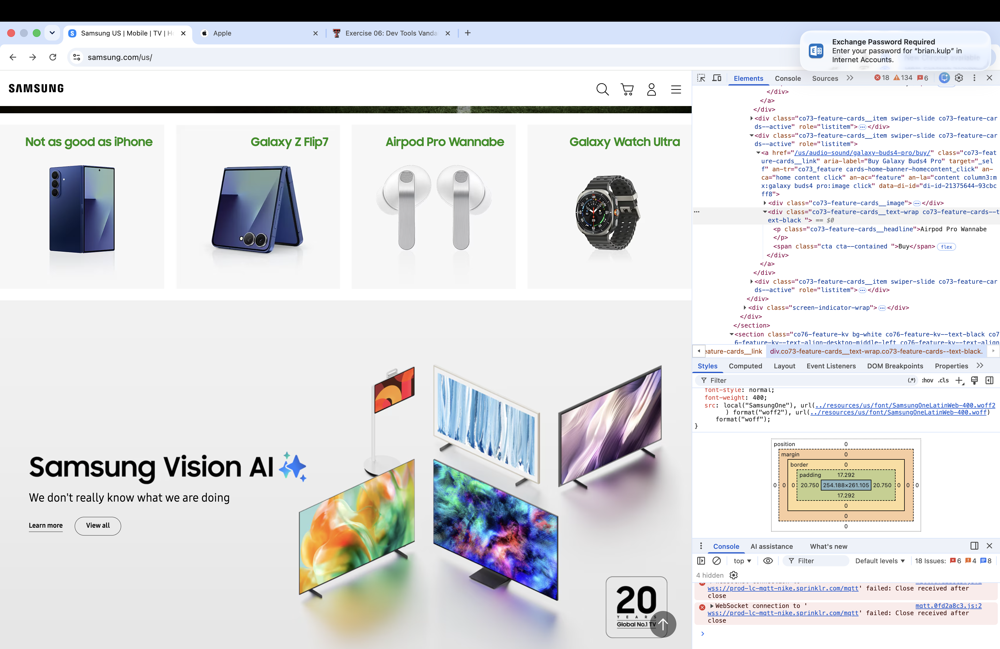

My Dev Tools Vandalism
I used browser developer tools to temporarily "vandalize" the Samsung website. Below is a screenshot showing my changes. These edits only appeared on my computer and did not affect the actual website.

What I "Vandalized"
Describe the changes you made to the website using the browser's developer tools. Some potential questions to consider:
- I changed the Galaxy Z Fold 7 name to Not as good as iPhone, Galaxy Buds 4 Pro to Airpod Pro Wannabe, and under Samsung Vision AI i changed Answering you passions to We don't really know what we are doing.
- I modified the color of the device name text to green and the text align to right in the CSS file.
- I'm a fan of Apple products so it was funny to trash Samsung.
- All the changes I attempted worked but if some of the text I wanted to change was part of a picture then I wouldn't be able to change it wihout replacing or editing the picture.
- I thought it was funny to name the Samsung products to show they aren't as good as Apple.
- I was able to see in Visual Studio Code the changes in the CSS as I was entering them.
- I have a better understanding of dev tools now, I initially had issues with accidentally clicking a link and losing the work that I did and having to start over. I can see how scammers can mimic a legit website and copy the code and post it as a website name to get people to mistakingly make payments and get sensitive personal information.